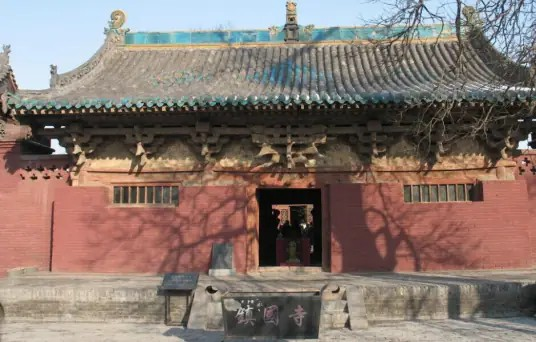

镇国寺 |
返回主页 |  | |
| 镇国寺，位于山西省平遥县城东北15千米的郝洞村，始建于五代北汉天会七年（963年）。初名“京城寺”，明嘉靖时改称“镇国寺”，延用至今。寺庙经金、元、明、清多次重修、重建，现存寺院共有两进院落，坐北朝南。 镇国寺的建筑，以万佛殿为最早，虽经历代多次重修，但仍保持了五代时的风貌，是中国佛教寺院中现存的三处五代建筑之一，其中的彩塑，更是全国寺庙殿宇中保存至今的唯一五代作品。镇国寺的创建，无疑对研究五代史提供了宝贵的史料。这个时期，北汉仅仅拥有山西中南部的一小片领土，无力同后周王朝政权抗衡，便大力提倡崇信佛教，为求得佛祖庇佑，在所辖境内大修佛寺。镇国寺内有不少文物提供了宝贵的研究史料。如东西碑亭五代时期的半截碑，残缺不全的文字中，记载了北汉小朝廷的宫廷斗争，对研究五代十国时期的历史有着重大的参考价值。 1988年1月13日，镇国寺被国务院公布为第三批全国重点文物保护单位。 2022年5月13日，山西省人民政府公布镇国寺等二十六处全国重点文物保护单位保护规划。 |
|||